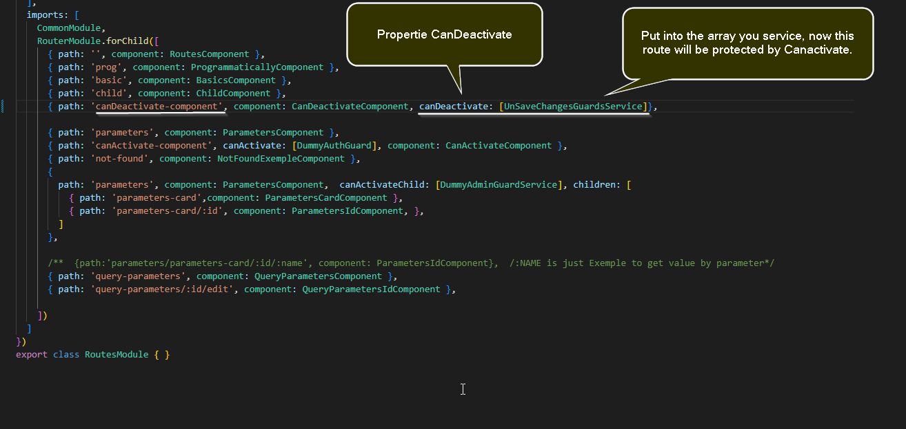

<p>can-deactivate works!</p>
<div class="container">
  <div class="row">
    <div class="col-xs-12">
      <div class="d-grid gap-2 d-md-flex justify-content-md-end">
        <button type="button" class="btn btn-outline-light" routerLink="/routes">Back Routes</button>
      </div>
    </div>
  </div>
  <div class="row ">
    <div class="col-xs-12">
      <h2> Can-deactivate </h2>
    </div>
  </div>
  <div class="col-xs-12 picture">
    <div class="image">
      
    </div>
  </div>

</div>
